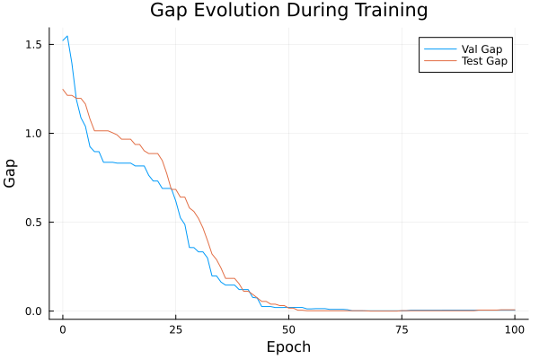
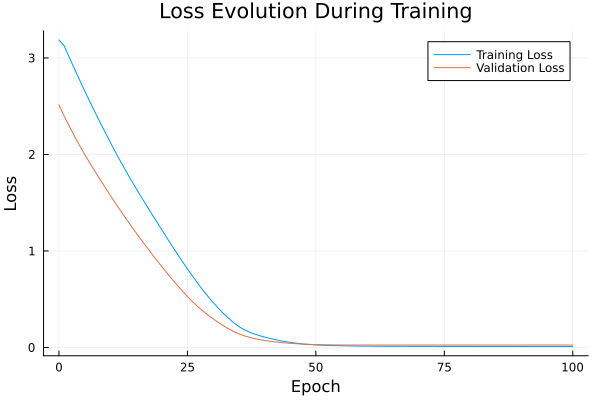

Basic Tutorial: Training with FYL on Argmax Benchmark
This tutorial demonstrates the basic workflow for training a policy using the Perturbed Fenchel-Young Loss algorithm.
Setup
using DecisionFocusedLearningAlgorithms
using DecisionFocusedLearningBenchmarks
using MLUtils: splitobs
using PlotsCreate Benchmark and Data
b = ArgmaxBenchmark()
dataset = generate_dataset(b, 100)
train_data, val_data, test_data = splitobs(dataset; at=(0.3, 0.3, 0.4))(DecisionFocusedLearningBenchmarks.Utils.DataSample{@NamedTuple{}, @NamedTuple{}, Matrix{Float32}, Vector{Float32}, Vector{Float32}}[DataSample(x=Float32[1.04647 -0.190388 … 1.97915 2.0996; -0.213981 1.73623 … 0.671236 0.879221; … ; -0.776748 -0.859782 … -0.678577 -0.46655; 0.352126 0.92617 … 0.26894 -1.10027], θ=Float32[0.520092, 0.0515442, 2.95611, -0.317522, -3.23431, 0.212909, -0.601462, -1.02779, -1.55071, -2.57722], y=Float32[0.0, 0.0, 1.0, 0.0, 0.0, 0.0, 0.0, 0.0, 0.0, 0.0]), DataSample(x=Float32[0.271111 -2.70304 … 1.08532 0.723143; 0.430793 0.445362 … -1.18293 2.00594; … ; 0.105796 0.756716 … 0.659579 0.254467; 1.2323 -1.15614 … -0.328763 -0.366464], θ=Float32[1.5526, 0.896249, -0.553011, -1.63916, -0.332466, 0.310677, 1.96604, -0.895211, 0.535688, -1.1986], y=Float32[0.0, 0.0, 0.0, 0.0, 0.0, 0.0, 1.0, 0.0, 0.0, 0.0]), DataSample(x=Float32[-0.887167 0.113715 … -1.22194 0.440159; 0.00657875 -0.771838 … -0.666413 1.26992; … ; 0.578501 -0.107016 … -0.655743 -0.287336; 2.53126 -0.107869 … 1.95596 2.46952], θ=Float32[2.6547, 0.0201932, 0.0701553, 2.77449, 1.46467, -0.910455, -0.402455, 0.278623, 1.74656, 0.918889], y=Float32[0.0, 0.0, 0.0, 1.0, 0.0, 0.0, 0.0, 0.0, 0.0, 0.0]), DataSample(x=Float32[0.707304 -0.263654 … -1.86899 -0.223254; 0.740334 -0.596429 … -0.482628 -2.04931; … ; -0.26007 -0.389485 … 0.218018 -0.181914; -1.56512 0.136968 … -1.78623 -0.386369], θ=Float32[-2.78405, 0.508846, -1.6137, -0.965293, -0.0165064, -0.113893, 0.565033, -1.00121, -0.364705, 1.0746], y=Float32[0.0, 0.0, 0.0, 0.0, 0.0, 0.0, 0.0, 0.0, 0.0, 1.0]), DataSample(x=Float32[-1.9501 1.24625 … 0.717389 -0.700507; -1.49207 0.069727 … -0.740798 -0.0167698; … ; 1.03563 2.02865 … 0.137542 0.513325; -1.12293 -0.426768 … -1.81881 0.164003], θ=Float32[0.673627, 0.304138, -0.369111, 0.0241262, 0.401657, 0.2056, 0.717698, -0.747087, -0.683353, 0.653349], y=Float32[0.0, 0.0, 0.0, 0.0, 0.0, 0.0, 1.0, 0.0, 0.0, 0.0]), DataSample(x=Float32[1.10734 -2.48656 … -0.453763 0.743583; 0.668044 -2.06222 … 0.604163 -0.432384; … ; -1.59004 -1.04658 … -0.31195 -0.181033; 0.490625 0.0200788 … -1.42018 0.18048], θ=Float32[-1.53079, 1.34231, 2.41193, -1.99909, -1.87597, -0.462935, -1.16192, 1.53065, -0.700187, 0.216321], y=Float32[0.0, 0.0, 1.0, 0.0, 0.0, 0.0, 0.0, 0.0, 0.0, 0.0]), DataSample(x=Float32[0.307892 1.5977 … -1.02858 -0.715304; -0.227962 -1.59418 … 1.32613 -0.878073; … ; -1.43197 0.421774 … -1.77242 0.408353; 0.396666 -0.364593 … -1.07532 -0.213905], θ=Float32[-0.410959, 0.203088, 1.8907, 0.730082, -1.57979, 0.747203, -1.02823, 0.512818, -1.85595, 0.751], y=Float32[0.0, 0.0, 1.0, 0.0, 0.0, 0.0, 0.0, 0.0, 0.0, 0.0]), DataSample(x=Float32[0.454682 0.228 … -0.179885 0.186366; 0.375623 1.27569 … 0.955696 -0.835716; … ; 0.295956 -0.368659 … 0.190072 0.289331; 0.348355 1.58649 … 0.273085 -0.120754], θ=Float32[-0.306284, 0.906176, -1.00105, -1.4862, -0.303275, -0.101734, 1.84057, 2.08001, 0.544644, -0.150537], y=Float32[0.0, 0.0, 0.0, 0.0, 0.0, 0.0, 0.0, 1.0, 0.0, 0.0]), DataSample(x=Float32[0.47189 0.602141 … -1.18479 -0.567177; -0.532652 0.876973 … 0.249116 0.165355; … ; 0.325445 -0.192527 … -0.00396898 -1.45369; -1.50457 0.432695 … 0.342343 1.43183], θ=Float32[-1.44251, -0.944702, 2.05112, -1.23953, -2.25718, -0.192845, -1.07637, -0.240862, 0.498857, 0.69688], y=Float32[0.0, 0.0, 1.0, 0.0, 0.0, 0.0, 0.0, 0.0, 0.0, 0.0]), DataSample(x=Float32[0.435548 0.143469 … 0.0937672 -0.659302; -0.615388 1.52071 … 1.00064 -0.470933; … ; -0.270562 1.97689 … -1.81123 0.840931; -0.15801 -1.54159 … 0.559602 0.719872], θ=Float32[0.275142, -1.02444, 1.63269, -0.941832, -2.77249, 1.40026, -0.279649, 1.55184, -2.13078, 1.6453], y=Float32[0.0, 0.0, 0.0, 0.0, 0.0, 0.0, 0.0, 0.0, 0.0, 1.0]) … DataSample(x=Float32[-2.48224 -0.402784 … -0.286987 0.208489; -0.801468 0.616078 … -0.81938 0.528706; … ; -0.257763 0.786072 … -1.53117 -1.44833; -0.592719 -0.210755 … 0.495805 0.357564], θ=Float32[-0.229064, 0.33693, -1.92623, 0.519934, 0.872187, 0.49169, -1.1999, -0.0138552, 0.300029, -0.213064], y=Float32[0.0, 0.0, 0.0, 0.0, 1.0, 0.0, 0.0, 0.0, 0.0, 0.0]), DataSample(x=Float32[0.506575 0.560771 … 0.326938 -0.495253; -0.717855 0.924218 … -0.0394899 0.511229; … ; 0.0791006 -1.28327 … 0.269345 0.403445; -0.506474 1.90057 … 1.93026 -0.450187], θ=Float32[0.0918357, 1.03445, -1.08232, 1.91881, -1.97104, 2.05211, 0.199448, -0.762507, 2.08411, -0.661549], y=Float32[0.0, 0.0, 0.0, 0.0, 0.0, 0.0, 0.0, 0.0, 1.0, 0.0]), DataSample(x=Float32[-0.0843785 1.09744 … -0.9502 1.11337; 0.637294 -0.172021 … 0.0143975 -0.723907; … ; -0.162156 1.4548 … -0.617831 2.05635; -1.08797 0.264137 … 0.0303804 1.4333], θ=Float32[-1.2014, 0.640822, 0.471217, 0.915432, 0.310564, 1.23338, 0.0138375, 1.33703, -0.25988, 2.06572], y=Float32[0.0, 0.0, 0.0, 0.0, 0.0, 0.0, 0.0, 0.0, 0.0, 1.0]), DataSample(x=Float32[0.863049 -1.36616 … 1.50186 -0.0194446; 0.826957 0.692428 … -0.644526 0.854862; … ; -0.673723 -1.17432 … 0.365398 -1.19149; 0.21368 -1.41675 … 1.05326 -0.67141], θ=Float32[-0.845182, -1.86426, 0.502047, -1.16763, 1.35598, -1.03006, -1.03185, -0.963884, 0.518757, -1.31698], y=Float32[0.0, 0.0, 0.0, 0.0, 1.0, 0.0, 0.0, 0.0, 0.0, 0.0]), DataSample(x=Float32[0.967572 -0.442603 … -0.47763 -1.30267; 0.0701033 -0.611417 … 0.30931 1.53658; … ; 2.15455 -0.141122 … -0.621998 0.616673; -1.40826 0.392722 … 1.45843 -1.32885], θ=Float32[-0.649143, 0.581932, -0.0535421, -0.193192, -0.196665, 0.530358, 1.19292, 1.9559, 0.775582, -1.48182], y=Float32[0.0, 0.0, 0.0, 0.0, 0.0, 0.0, 0.0, 1.0, 0.0, 0.0]), DataSample(x=Float32[-0.252946 0.415807 … 0.232082 1.21392; -1.90296 -1.44715 … -1.20935 -0.448699; … ; -0.733368 2.28526 … -0.162538 0.276962; 0.833537 0.318545 … 1.25746 -1.02265], θ=Float32[2.34251, 1.91506, 0.255877, -1.94721, 2.50153, 1.40255, 1.63608, 1.35177, 1.70295, -0.502806], y=Float32[0.0, 0.0, 0.0, 0.0, 1.0, 0.0, 0.0, 0.0, 0.0, 0.0]), DataSample(x=Float32[-0.387085 -1.15852 … 0.587114 -0.894398; -1.14831 -0.353975 … 0.89578 -0.982038; … ; -0.5016 0.441459 … 0.693912 0.579613; -0.258076 -2.02156 … 0.0669095 -2.12253], θ=Float32[0.178265, -1.34532, -0.0168694, -0.110807, 1.45514, 1.68751, 0.464978, 0.189865, -0.902069, -1.03869], y=Float32[0.0, 0.0, 0.0, 0.0, 0.0, 1.0, 0.0, 0.0, 0.0, 0.0]), DataSample(x=Float32[0.0799991 -1.77406 … 0.0631016 0.0716926; -0.368687 0.931367 … 0.158037 0.213666; … ; 0.478907 0.439494 … 2.20583 -0.098065; -2.03386 -0.00739351 … 0.369909 0.197738], θ=Float32[-1.24158, 1.07247, 0.625485, 1.69516, 1.38416, -3.31841, 0.692736, 0.184285, 1.48329, -0.345979], y=Float32[0.0, 0.0, 0.0, 1.0, 0.0, 0.0, 0.0, 0.0, 0.0, 0.0]), DataSample(x=Float32[0.629304 -2.10329 … -0.0324515 -1.7895; -0.476537 -0.358898 … 0.560981 0.789473; … ; -0.17696 0.626092 … -0.415336 0.501116; -0.620057 0.0519038 … -0.625885 -0.861251], θ=Float32[-0.749885, 0.505293, 0.816001, 1.09996, -0.505972, 0.244947, 1.47736, 1.81012, -1.03525, 0.130401], y=Float32[0.0, 0.0, 0.0, 0.0, 0.0, 0.0, 0.0, 1.0, 0.0, 0.0]), DataSample(x=Float32[0.187326 0.138032 … 0.725713 -0.50429; -0.511487 -0.446606 … -0.917782 -0.884338; … ; 1.55519 0.359479 … -0.298206 -0.892704; -0.966639 0.306265 … -0.239619 -1.97678], θ=Float32[0.560215, 0.259086, 2.01155, 0.43243, 0.862927, 0.348487, 1.24411, -0.393864, -0.292002, -0.965614], y=Float32[0.0, 0.0, 1.0, 0.0, 0.0, 0.0, 0.0, 0.0, 0.0, 0.0])], DecisionFocusedLearningBenchmarks.Utils.DataSample{@NamedTuple{}, @NamedTuple{}, Matrix{Float32}, Vector{Float32}, Vector{Float32}}[DataSample(x=Float32[-0.330634 0.162165 … 0.445286 0.209656; -1.13577 0.513971 … -0.163204 -1.2853; … ; 0.0354787 -1.17837 … 1.83533 0.849359; -0.0781616 0.789627 … 1.11881 0.106918], θ=Float32[1.06373, -0.219105, -0.133345, 2.14765, 1.17191, 1.42181, -2.05727, -0.955171, 1.37079, 0.997226], y=Float32[0.0, 0.0, 0.0, 1.0, 0.0, 0.0, 0.0, 0.0, 0.0, 0.0]), DataSample(x=Float32[-1.20819 0.799816 … 0.141482 -0.574073; -0.144188 -0.648865 … 0.950142 0.140353; … ; 0.342078 -0.219229 … 0.264782 -0.0889392; -1.45571 -0.0756669 … -0.189727 -0.840262], θ=Float32[-0.728982, -0.00973891, 0.185907, 2.63683, 2.37593, 0.188655, -0.169314, 1.41533, 0.00638664, -0.457137], y=Float32[0.0, 0.0, 0.0, 1.0, 0.0, 0.0, 0.0, 0.0, 0.0, 0.0]), DataSample(x=Float32[0.31299 0.283711 … 1.20668 0.288245; -0.401772 -0.158882 … 0.660693 2.32569; … ; -0.847657 0.228502 … 0.496409 1.60178; 0.643008 0.658452 … 1.66224 -0.0792693], θ=Float32[-0.0624446, 1.29838, 0.309792, -1.39716, 2.89401, 0.47803, -0.488497, 0.727718, 1.48303, -0.55762], y=Float32[0.0, 0.0, 0.0, 0.0, 1.0, 0.0, 0.0, 0.0, 0.0, 0.0]), DataSample(x=Float32[-0.492723 -0.643102 … 0.24523 0.502171; -0.0590281 1.54737 … -1.00355 -0.260397; … ; 0.234613 -0.735478 … 1.39364 1.06842; -0.0649022 -0.957206 … -0.997053 1.81624], θ=Float32[0.169099, -1.67957, -0.807653, 0.453711, -0.519358, -2.9192, -1.10433, 0.224141, 1.80761, 1.47101], y=Float32[0.0, 0.0, 0.0, 0.0, 0.0, 0.0, 0.0, 0.0, 1.0, 0.0]), DataSample(x=Float32[-1.4158 -0.278876 … -2.17782 0.87901; 1.40074 -0.087243 … -0.9719 -0.606157; … ; -0.0283322 1.25032 … -1.37755 1.87199; -0.760986 -0.167732 … -0.407744 0.0789822], θ=Float32[-1.21597, -0.273052, -1.27447, -0.299721, 0.415189, 0.160441, 1.15693, 0.156203, 0.51052, 1.0977], y=Float32[0.0, 0.0, 0.0, 0.0, 0.0, 0.0, 1.0, 0.0, 0.0, 0.0]), DataSample(x=Float32[1.26096 1.35506 … -1.28188 1.60551; 0.743426 0.215151 … -0.302264 -0.207137; … ; -0.460513 0.718401 … -2.34218 -1.28939; 0.517673 -0.442932 … -1.22037 -0.278669], θ=Float32[-1.27047, -1.01268, -0.280371, 0.329278, 0.597233, -1.25809, 0.00805524, 0.537955, -1.2767, -1.02174], y=Float32[0.0, 0.0, 0.0, 0.0, 1.0, 0.0, 0.0, 0.0, 0.0, 0.0]), DataSample(x=Float32[0.421017 -1.0484 … 1.35845 -0.535345; -0.204543 -0.191905 … -0.965704 0.693902; … ; -0.548583 1.55306 … 0.247012 1.15241; -1.65901 -1.36225 … -1.16831 -2.01156], θ=Float32[-1.97567, -0.600186, 0.072622, 1.14283, -3.98161, -2.42626, 0.746927, 2.26832, -0.249901, -1.0858], y=Float32[0.0, 0.0, 0.0, 0.0, 0.0, 0.0, 0.0, 1.0, 0.0, 0.0]), DataSample(x=Float32[-0.779447 0.239149 … -0.590958 0.126243; 0.0938758 1.36253 … -1.2247 -0.864767; … ; -0.948715 -0.492939 … 0.25589 0.883371; 0.683435 0.553963 … -1.06348 1.72959], θ=Float32[0.324727, -0.550818, 2.00886, -1.18547, 0.524224, 1.99043, -1.71791, 1.59157, -0.145636, 1.35023], y=Float32[0.0, 0.0, 1.0, 0.0, 0.0, 0.0, 0.0, 0.0, 0.0, 0.0]), DataSample(x=Float32[1.20138 1.12242 … 0.114818 0.162264; 0.166419 -0.494392 … -1.44835 -0.379192; … ; -0.529621 -0.819397 … -0.33627 0.201693; 0.286059 -1.39664 … 1.22786 0.727849], θ=Float32[-0.830188, -1.20809, 1.21413, -0.819235, -1.18074, 2.05322, 2.05946, -0.23797, 2.07406, 1.32039], y=Float32[0.0, 0.0, 0.0, 0.0, 0.0, 0.0, 0.0, 0.0, 1.0, 0.0]), DataSample(x=Float32[-0.233469 1.58402 … -0.388942 -0.297005; 0.870003 0.191059 … -0.699417 -0.954087; … ; -0.183797 -0.719491 … -1.45274 -0.17126; -0.73216 -0.501741 … 0.733412 0.809546], θ=Float32[-1.22534, -1.37705, 0.499164, -1.20395, -0.93247, -1.37745, 0.48948, -0.581553, 0.120713, 0.609431], y=Float32[0.0, 0.0, 0.0, 0.0, 0.0, 0.0, 0.0, 0.0, 0.0, 1.0]) … DataSample(x=Float32[-2.1878 -0.580172 … -0.0212178 0.341006; 0.221717 1.65334 … -1.23346 -0.0453972; … ; 0.834075 -0.391239 … -0.848234 -1.29228; -0.482529 -0.500167 … 0.181674 -0.232921], θ=Float32[0.942656, -1.05805, -0.967466, -1.32503, -3.47241, 0.357465, 0.138546, 1.15688, 0.115911, -1.18239], y=Float32[0.0, 0.0, 0.0, 0.0, 0.0, 0.0, 0.0, 1.0, 0.0, 0.0]), DataSample(x=Float32[1.13129 0.326837 … 0.964396 -2.38726; -0.388131 -1.26597 … -0.0318348 -2.37082; … ; 2.19097 -0.895972 … -0.700598 0.956568; 0.359622 -0.100651 … 0.382177 0.228294], θ=Float32[0.864904, -0.115285, 0.814885, -0.737356, 2.57228, 0.144827, -2.48294, 0.0913875, -0.318111, 2.67999], y=Float32[0.0, 0.0, 0.0, 0.0, 0.0, 0.0, 0.0, 0.0, 0.0, 1.0]), DataSample(x=Float32[0.31464 0.0564056 … 0.863241 -2.52234; 0.684556 -1.65711 … 0.109572 1.2874; … ; -0.331057 -1.42154 … 1.67065 1.37569; 0.965269 1.52624 … 1.18705 0.553394], θ=Float32[0.693162, 1.15548, -2.01921, 0.312844, 1.16839, 0.0673413, 1.92774, 0.744971, 1.3279, 2.64085], y=Float32[0.0, 0.0, 0.0, 0.0, 0.0, 0.0, 0.0, 0.0, 0.0, 1.0]), DataSample(x=Float32[-0.194989 -2.13956 … -0.790728 -0.163071; 0.585211 -0.13908 … 0.571318 -0.291662; … ; 0.540094 -0.486212 … 0.839044 1.48333; 0.134556 -1.74255 … -1.3824 0.50511], θ=Float32[-0.0487814, -0.653987, -1.49123, -1.78082, -0.474041, 1.73719, 0.371944, 0.774697, -0.550633, 1.90148], y=Float32[0.0, 0.0, 0.0, 0.0, 0.0, 0.0, 0.0, 0.0, 0.0, 1.0]), DataSample(x=Float32[0.608268 -0.0498012 … -0.102647 0.249617; -0.817628 1.22067 … -0.419165 -0.234569; … ; 1.13301 -0.114918 … -0.489093 1.24295; -0.111157 -0.509607 … 0.558573 0.852268], θ=Float32[0.629524, -0.90436, 0.65267, 0.109857, -1.22444, -1.99059, -0.135976, 1.39156, 1.14646, 1.89658], y=Float32[0.0, 0.0, 0.0, 0.0, 0.0, 0.0, 0.0, 0.0, 0.0, 1.0]), DataSample(x=Float32[1.48623 1.00509 … 1.11887 -1.09042; 0.207035 -0.347987 … 2.28138 1.40802; … ; 0.391185 2.07922 … 1.40954 -0.313991; 1.56611 1.14396 … 0.33125 0.120306], θ=Float32[0.15572, 1.61792, 0.824034, -0.695, 2.35584, 0.362932, -1.19412, 2.34964, -0.389839, -0.659197], y=Float32[0.0, 0.0, 0.0, 0.0, 1.0, 0.0, 0.0, 0.0, 0.0, 0.0]), DataSample(x=Float32[-0.178911 -0.144069 … -0.224142 -0.899738; -1.78082 -1.11796 … 0.268042 -1.93868; … ; -1.91945 1.71079 … 1.21976 1.38837; -1.58772 -0.731423 … -1.5635 1.05092], θ=Float32[-1.45173, 1.27539, -1.86662, -0.253604, 0.0886455, 0.811058, 1.60114, 1.37785, -0.997084, 3.02089], y=Float32[0.0, 0.0, 0.0, 0.0, 0.0, 0.0, 0.0, 0.0, 0.0, 1.0]), DataSample(x=Float32[1.10531 -0.354842 … 0.0322513 -0.541196; -0.407773 0.357524 … -0.546988 0.203243; … ; 1.81407 -0.326708 … -1.60279 -1.76511; -0.615831 3.50882 … -1.94268 -0.198396], θ=Float32[0.223059, 2.61425, -1.64059, 0.65855, -0.939283, 1.21994, -0.912861, -0.18669, -2.53684, -0.12288], y=Float32[0.0, 1.0, 0.0, 0.0, 0.0, 0.0, 0.0, 0.0, 0.0, 0.0]), DataSample(x=Float32[0.644387 0.519946 … -1.23325 -0.589837; 0.125958 0.230555 … 1.18719 -1.31161; … ; -0.534539 -1.2054 … -0.469426 0.0821981; -0.695545 -0.412949 … -0.565387 -0.33034], θ=Float32[-0.855518, -1.39137, -0.54112, -1.7339, -0.972783, 1.61333, 1.89968, -0.124306, -0.916177, 0.527987], y=Float32[0.0, 0.0, 0.0, 0.0, 0.0, 0.0, 1.0, 0.0, 0.0, 0.0]), DataSample(x=Float32[1.22832 1.0981 … 0.929396 0.00356156; 1.13709 -0.864632 … -0.607356 1.1031; … ; -1.29739 -0.176984 … -0.619314 -1.6085; 0.0267736 0.422865 … 0.110533 0.190148], θ=Float32[-1.44271, 1.05303, -0.269664, 0.509797, 0.455094, 1.09145, 0.413473, -1.63832, 0.00331848, -1.15125], y=Float32[0.0, 0.0, 0.0, 0.0, 0.0, 1.0, 0.0, 0.0, 0.0, 0.0])], DecisionFocusedLearningBenchmarks.Utils.DataSample{@NamedTuple{}, @NamedTuple{}, Matrix{Float32}, Vector{Float32}, Vector{Float32}}[DataSample(x=Float32[-0.487482 0.192514 … 1.23647 -1.24142; -0.678596 0.152969 … -0.39805 -0.735417; … ; -0.295868 -1.70237 … 1.92974 0.0122511; 0.815367 1.17066 … 0.0766323 0.458343], θ=Float32[0.847208, 0.565737, -1.88698, 0.738572, 0.274704, 1.31079, 0.650714, -0.695592, 0.542746, 0.506647], y=Float32[0.0, 0.0, 0.0, 0.0, 0.0, 1.0, 0.0, 0.0, 0.0, 0.0]), DataSample(x=Float32[-0.687955 -0.159543 … 0.639565 0.45715; -1.47659 -1.22758 … -0.406341 0.199062; … ; 0.832306 -0.30741 … 0.184673 -0.288749; -0.730145 -0.787964 … -0.211111 -0.671472], θ=Float32[0.539507, 0.440712, -0.9409, -0.334923, 0.635817, 0.981116, 1.82008, -1.11143, -0.547392, -1.07481], y=Float32[0.0, 0.0, 0.0, 0.0, 0.0, 0.0, 1.0, 0.0, 0.0, 0.0]), DataSample(x=Float32[0.898712 -0.40137 … 1.13309 0.72485; -0.22612 1.41106 … -0.243786 -0.590724; … ; -1.15702 0.599516 … 1.51748 0.895769; -0.400606 0.0306786 … -1.32368 -0.364223], θ=Float32[-1.31137, 0.287985, -0.870191, -0.890409, 2.11974, 0.0274032, 1.33633, -2.34362, -0.315152, 0.251893], y=Float32[0.0, 0.0, 0.0, 0.0, 1.0, 0.0, 0.0, 0.0, 0.0, 0.0]), DataSample(x=Float32[0.749823 0.500091 … 2.1748 0.141903; -1.18434 0.336166 … 0.453675 0.783124; … ; 0.351425 1.73523 … 1.25976 0.645003; 0.383781 -1.07012 … -0.873774 -1.1693], θ=Float32[0.272416, 0.0686079, 2.87979, -0.971856, -0.687905, 0.953854, -1.16907, 0.456023, -0.590025, -0.759921], y=Float32[0.0, 0.0, 1.0, 0.0, 0.0, 0.0, 0.0, 0.0, 0.0, 0.0]), DataSample(x=Float32[-0.199566 1.13753 … 0.918124 -0.101593; 1.26561 1.82352 … 0.283502 -1.56981; … ; -0.579729 0.247869 … 0.0186301 1.84465; -0.0234992 0.40121 … 0.256507 0.817878], θ=Float32[-1.04331, -0.510332, -1.0078, 1.86396, 0.388462, 2.14404, 1.26213, 1.85574, 0.0775725, 3.2014], y=Float32[0.0, 0.0, 0.0, 0.0, 0.0, 0.0, 0.0, 0.0, 0.0, 1.0]), DataSample(x=Float32[1.16299 -0.055707 … 0.057705 -2.03699; 0.698844 -0.441974 … -0.467565 0.0620858; … ; 0.68764 -1.54388 … 0.0408182 -0.864173; 0.688553 1.00327 … -0.432076 0.555619], θ=Float32[0.773822, 0.712835, 0.895858, 1.15529, 1.7681, 3.31895, -1.29304, 2.86077, -0.631973, 0.0947105], y=Float32[0.0, 0.0, 0.0, 0.0, 0.0, 1.0, 0.0, 0.0, 0.0, 0.0]), DataSample(x=Float32[0.432401 0.205413 … -0.322118 -0.26063; -0.628265 -0.775736 … 0.226985 -0.326314; … ; -1.27811 1.06818 … -0.182525 -0.643793; -0.461787 -0.591484 … 1.40201 0.635545], θ=Float32[-0.581367, -0.447856, 0.40055, 1.12722, 0.359165, -0.617691, 0.278064, -2.50056, 1.04676, 0.4848], y=Float32[0.0, 0.0, 0.0, 1.0, 0.0, 0.0, 0.0, 0.0, 0.0, 0.0]), DataSample(x=Float32[-0.216828 -0.986409 … -1.12433 -0.137493; -0.501174 -0.523915 … 0.240055 1.42919; … ; -0.739442 0.460324 … 0.254043 -0.282185; 0.817193 0.516513 … -0.982966 -1.86496], θ=Float32[1.42425, 1.43756, 0.873628, 1.79561, 1.54688, 2.0601, 1.18598, 0.484743, -0.481818, -2.21981], y=Float32[0.0, 0.0, 0.0, 0.0, 0.0, 1.0, 0.0, 0.0, 0.0, 0.0]), DataSample(x=Float32[1.1446 1.86712 … 0.419794 1.22397; 0.942203 -0.960549 … 0.294062 -1.77681; … ; 0.490741 1.26581 … -0.139817 0.223758; -0.347438 -0.31454 … -1.12587 -0.104681], θ=Float32[-1.20313, 0.0837648, -0.460316, 1.56146, -1.58251, -0.49479, 0.443973, -0.702385, -2.18739, 0.798391], y=Float32[0.0, 0.0, 0.0, 1.0, 0.0, 0.0, 0.0, 0.0, 0.0, 0.0]), DataSample(x=Float32[-0.0159112 1.76012 … -0.26702 1.06958; 1.25827 0.368883 … -0.143933 0.438252; … ; 0.282873 -0.542004 … -2.41699 -1.64266; -0.102199 0.55498 … -0.0237779 -1.31656], θ=Float32[-0.853952, -1.65614, -1.06878, 0.43829, -1.20473, -0.0351671, -0.270157, 1.33931, -1.69365, -1.54915], y=Float32[0.0, 0.0, 0.0, 0.0, 0.0, 0.0, 0.0, 1.0, 0.0, 0.0]) … DataSample(x=Float32[-0.208321 0.164561 … 1.24047 1.1727; 0.288327 -2.49049 … -0.956241 1.36852; … ; -0.688025 0.723337 … 1.01577 1.49876; -0.436465 -0.0582364 … 2.06247 0.395418], θ=Float32[-0.833543, 1.66761, 1.80942, -2.19191, 0.38564, 1.98171, 1.41244, -1.31487, 2.53206, 0.368332], y=Float32[0.0, 0.0, 0.0, 0.0, 0.0, 0.0, 0.0, 0.0, 1.0, 0.0]), DataSample(x=Float32[0.955928 0.169532 … -0.680199 0.384132; 1.03804 -0.338323 … 0.0809603 1.41926; … ; 0.664234 -0.775308 … -0.413321 1.28693; -1.93008 -0.560488 … 1.62782 0.126682], θ=Float32[-1.33403, -0.0470821, -0.462362, 1.3446, -0.153682, 1.76785, 0.133038, -0.515621, 1.29329, 0.0700042], y=Float32[0.0, 0.0, 0.0, 0.0, 0.0, 1.0, 0.0, 0.0, 0.0, 0.0]), DataSample(x=Float32[-0.0829141 -1.47319 … 0.355397 -0.564638; 0.749633 -0.046996 … 1.15402 -0.617805; … ; -1.18311 -1.04224 … 0.444436 1.09673; 1.26246 0.0459005 … -0.723574 -0.474022], θ=Float32[-0.225998, -0.279158, 1.55556, 2.3695, -0.0809538, -0.441174, 1.44121, -0.196237, -1.46895, 0.778962], y=Float32[0.0, 0.0, 0.0, 1.0, 0.0, 0.0, 0.0, 0.0, 0.0, 0.0]), DataSample(x=Float32[-0.749152 0.282897 … 0.869578 0.444418; -0.419218 -0.107034 … -1.56893 0.10568; … ; 0.182664 0.903265 … -1.19808 0.361829; -0.0346979 -0.138605 … -0.0973104 -1.69301], θ=Float32[1.13564, 1.25423, 1.74193, 1.83386, 0.289515, 1.59571, 0.231332, -1.76737, 0.332766, -1.25486], y=Float32[0.0, 0.0, 0.0, 1.0, 0.0, 0.0, 0.0, 0.0, 0.0, 0.0]), DataSample(x=Float32[-0.24848 2.31788 … 0.871607 -0.895042; 1.60233 0.661053 … -0.225902 -1.22094; … ; -0.821722 1.01138 … -2.51016 0.266594; -0.672604 -0.0545117 … -0.220562 -0.475281], θ=Float32[-1.7614, -0.566364, 0.45742, 1.52896, -0.176214, -0.943918, -0.57231, -1.20653, -1.80889, -0.431343], y=Float32[0.0, 0.0, 0.0, 1.0, 0.0, 0.0, 0.0, 0.0, 0.0, 0.0]), DataSample(x=Float32[-1.41338 -1.77155 … 1.81671 -0.63408; -0.999014 -1.35038 … -0.708292 -0.682958; … ; 1.5583 -0.341852 … 1.2697 -0.680838; -0.24424 1.76354 … 1.19135 -1.21754], θ=Float32[1.843, 2.60815, -1.07574, 0.133388, 2.94942, -1.81241, 1.74455, 0.102327, 1.7422, -0.494568], y=Float32[0.0, 0.0, 0.0, 0.0, 1.0, 0.0, 0.0, 0.0, 0.0, 0.0]), DataSample(x=Float32[0.480832 -0.307739 … 0.075569 -0.58477; 0.579056 1.3841 … 0.459317 0.439541; … ; -0.949487 1.06642 … 2.15481 -0.119404; 0.655878 0.469514 … -1.34211 0.525063], θ=Float32[-0.466492, 0.640026, 0.26232, -1.99796, 0.37245, -1.04293, 0.60213, 0.891357, 0.385438, -0.299236], y=Float32[0.0, 0.0, 0.0, 0.0, 0.0, 0.0, 0.0, 1.0, 0.0, 0.0]), DataSample(x=Float32[-1.2282 1.44969 … -0.121633 0.213022; -0.867313 1.79418 … -0.311912 0.135443; … ; -0.0896398 -0.439766 … 0.545703 0.0587562; -1.79453 0.630165 … -1.95584 -0.616351], θ=Float32[-0.620554, -1.64881, 1.08643, 0.75607, -1.46913, -0.965679, -0.0250518, 1.20993, -1.39168, -2.06637], y=Float32[0.0, 0.0, 0.0, 0.0, 0.0, 0.0, 0.0, 1.0, 0.0, 0.0]), DataSample(x=Float32[-0.930611 -0.170608 … -1.12258 -0.0107661; -2.11639 0.139695 … -0.0358979 1.23092; … ; 0.345004 -0.974211 … -0.0431843 -1.15111; -1.20366 0.392875 … 0.474976 2.32882], θ=Float32[1.39369, -0.0632705, -0.619037, -1.93947, -0.309601, 1.26615, 0.671902, -0.889581, -0.933506, 0.454608], y=Float32[1.0, 0.0, 0.0, 0.0, 0.0, 0.0, 0.0, 0.0, 0.0, 0.0]), DataSample(x=Float32[1.99756 -0.725077 … -2.45614 0.61886; 1.0844 0.0527169 … -0.241282 -0.166471; … ; 1.8136 1.65493 … 0.0381408 0.722216; -0.668475 0.0673425 … 0.0324084 -1.1229], θ=Float32[-1.10567, 1.27704, -1.39888, 0.639492, -1.75103, 0.530495, -1.80776, -0.557391, 0.728541, 0.181352], y=Float32[0.0, 1.0, 0.0, 0.0, 0.0, 0.0, 0.0, 0.0, 0.0, 0.0])], DecisionFocusedLearningBenchmarks.Utils.DataSample{@NamedTuple{}, @NamedTuple{}, Matrix{Float32}, Vector{Float32}, Vector{Float32}}[])Create Policy
model = generate_statistical_model(b; seed=0)
maximizer = generate_maximizer(b)
policy = DFLPolicy(model, maximizer)DFLPolicy{Flux.Chain{Tuple{Flux.Dense{typeof(identity), Matrix{Float32}, Bool}, typeof(vec)}}, typeof(DecisionFocusedLearningBenchmarks.Argmax.one_hot_argmax)}(Chain(Dense(5 => 1; bias=false), vec), DecisionFocusedLearningBenchmarks.Argmax.one_hot_argmax)Configure Algorithm
algorithm = PerturbedFenchelYoungLossImitation(;
nb_samples=10, ε=0.1, threaded=true, seed=0
)PerturbedFenchelYoungLossImitation{Optimisers.Adam{Float64, Tuple{Float64, Float64}, Float64}, Int64}(10, 0.1, true, Optimisers.Adam(eta=0.001, beta=(0.9, 0.999), epsilon=1.0e-8), 0, false)Define Metrics to track during training
validation_loss_metric = FYLLossMetric(val_data, :validation_loss)
val_gap_metric = FunctionMetric(:val_gap, val_data) do ctx, data
return compute_gap(b, data, ctx.policy.statistical_model, ctx.policy.maximizer)
end
test_gap_metric = FunctionMetric(:test_gap, test_data) do ctx, data
return compute_gap(b, data, ctx.policy.statistical_model, ctx.policy.maximizer)
end
metrics = (validation_loss_metric, val_gap_metric, test_gap_metric)(FYLLossMetric{SubArray{DecisionFocusedLearningBenchmarks.Utils.DataSample{@NamedTuple{}, @NamedTuple{}, Matrix{Float32}, Vector{Float32}, Vector{Float32}}, 1, Vector{DecisionFocusedLearningBenchmarks.Utils.DataSample{@NamedTuple{}, @NamedTuple{}, Matrix{Float32}, Vector{Float32}, Vector{Float32}}}, Tuple{UnitRange{Int64}}, true}}(DecisionFocusedLearningBenchmarks.Utils.DataSample{@NamedTuple{}, @NamedTuple{}, Matrix{Float32}, Vector{Float32}, Vector{Float32}}[DataSample(x=Float32[-0.330634 0.162165 … 0.445286 0.209656; -1.13577 0.513971 … -0.163204 -1.2853; … ; 0.0354787 -1.17837 … 1.83533 0.849359; -0.0781616 0.789627 … 1.11881 0.106918], θ=Float32[1.06373, -0.219105, -0.133345, 2.14765, 1.17191, 1.42181, -2.05727, -0.955171, 1.37079, 0.997226], y=Float32[0.0, 0.0, 0.0, 1.0, 0.0, 0.0, 0.0, 0.0, 0.0, 0.0]), DataSample(x=Float32[-1.20819 0.799816 … 0.141482 -0.574073; -0.144188 -0.648865 … 0.950142 0.140353; … ; 0.342078 -0.219229 … 0.264782 -0.0889392; -1.45571 -0.0756669 … -0.189727 -0.840262], θ=Float32[-0.728982, -0.00973891, 0.185907, 2.63683, 2.37593, 0.188655, -0.169314, 1.41533, 0.00638664, -0.457137], y=Float32[0.0, 0.0, 0.0, 1.0, 0.0, 0.0, 0.0, 0.0, 0.0, 0.0]), DataSample(x=Float32[0.31299 0.283711 … 1.20668 0.288245; -0.401772 -0.158882 … 0.660693 2.32569; … ; -0.847657 0.228502 … 0.496409 1.60178; 0.643008 0.658452 … 1.66224 -0.0792693], θ=Float32[-0.0624446, 1.29838, 0.309792, -1.39716, 2.89401, 0.47803, -0.488497, 0.727718, 1.48303, -0.55762], y=Float32[0.0, 0.0, 0.0, 0.0, 1.0, 0.0, 0.0, 0.0, 0.0, 0.0]), DataSample(x=Float32[-0.492723 -0.643102 … 0.24523 0.502171; -0.0590281 1.54737 … -1.00355 -0.260397; … ; 0.234613 -0.735478 … 1.39364 1.06842; -0.0649022 -0.957206 … -0.997053 1.81624], θ=Float32[0.169099, -1.67957, -0.807653, 0.453711, -0.519358, -2.9192, -1.10433, 0.224141, 1.80761, 1.47101], y=Float32[0.0, 0.0, 0.0, 0.0, 0.0, 0.0, 0.0, 0.0, 1.0, 0.0]), DataSample(x=Float32[-1.4158 -0.278876 … -2.17782 0.87901; 1.40074 -0.087243 … -0.9719 -0.606157; … ; -0.0283322 1.25032 … -1.37755 1.87199; -0.760986 -0.167732 … -0.407744 0.0789822], θ=Float32[-1.21597, -0.273052, -1.27447, -0.299721, 0.415189, 0.160441, 1.15693, 0.156203, 0.51052, 1.0977], y=Float32[0.0, 0.0, 0.0, 0.0, 0.0, 0.0, 1.0, 0.0, 0.0, 0.0]), DataSample(x=Float32[1.26096 1.35506 … -1.28188 1.60551; 0.743426 0.215151 … -0.302264 -0.207137; … ; -0.460513 0.718401 … -2.34218 -1.28939; 0.517673 -0.442932 … -1.22037 -0.278669], θ=Float32[-1.27047, -1.01268, -0.280371, 0.329278, 0.597233, -1.25809, 0.00805524, 0.537955, -1.2767, -1.02174], y=Float32[0.0, 0.0, 0.0, 0.0, 1.0, 0.0, 0.0, 0.0, 0.0, 0.0]), DataSample(x=Float32[0.421017 -1.0484 … 1.35845 -0.535345; -0.204543 -0.191905 … -0.965704 0.693902; … ; -0.548583 1.55306 … 0.247012 1.15241; -1.65901 -1.36225 … -1.16831 -2.01156], θ=Float32[-1.97567, -0.600186, 0.072622, 1.14283, -3.98161, -2.42626, 0.746927, 2.26832, -0.249901, -1.0858], y=Float32[0.0, 0.0, 0.0, 0.0, 0.0, 0.0, 0.0, 1.0, 0.0, 0.0]), DataSample(x=Float32[-0.779447 0.239149 … -0.590958 0.126243; 0.0938758 1.36253 … -1.2247 -0.864767; … ; -0.948715 -0.492939 … 0.25589 0.883371; 0.683435 0.553963 … -1.06348 1.72959], θ=Float32[0.324727, -0.550818, 2.00886, -1.18547, 0.524224, 1.99043, -1.71791, 1.59157, -0.145636, 1.35023], y=Float32[0.0, 0.0, 1.0, 0.0, 0.0, 0.0, 0.0, 0.0, 0.0, 0.0]), DataSample(x=Float32[1.20138 1.12242 … 0.114818 0.162264; 0.166419 -0.494392 … -1.44835 -0.379192; … ; -0.529621 -0.819397 … -0.33627 0.201693; 0.286059 -1.39664 … 1.22786 0.727849], θ=Float32[-0.830188, -1.20809, 1.21413, -0.819235, -1.18074, 2.05322, 2.05946, -0.23797, 2.07406, 1.32039], y=Float32[0.0, 0.0, 0.0, 0.0, 0.0, 0.0, 0.0, 0.0, 1.0, 0.0]), DataSample(x=Float32[-0.233469 1.58402 … -0.388942 -0.297005; 0.870003 0.191059 … -0.699417 -0.954087; … ; -0.183797 -0.719491 … -1.45274 -0.17126; -0.73216 -0.501741 … 0.733412 0.809546], θ=Float32[-1.22534, -1.37705, 0.499164, -1.20395, -0.93247, -1.37745, 0.48948, -0.581553, 0.120713, 0.609431], y=Float32[0.0, 0.0, 0.0, 0.0, 0.0, 0.0, 0.0, 0.0, 0.0, 1.0]) … DataSample(x=Float32[-2.1878 -0.580172 … -0.0212178 0.341006; 0.221717 1.65334 … -1.23346 -0.0453972; … ; 0.834075 -0.391239 … -0.848234 -1.29228; -0.482529 -0.500167 … 0.181674 -0.232921], θ=Float32[0.942656, -1.05805, -0.967466, -1.32503, -3.47241, 0.357465, 0.138546, 1.15688, 0.115911, -1.18239], y=Float32[0.0, 0.0, 0.0, 0.0, 0.0, 0.0, 0.0, 1.0, 0.0, 0.0]), DataSample(x=Float32[1.13129 0.326837 … 0.964396 -2.38726; -0.388131 -1.26597 … -0.0318348 -2.37082; … ; 2.19097 -0.895972 … -0.700598 0.956568; 0.359622 -0.100651 … 0.382177 0.228294], θ=Float32[0.864904, -0.115285, 0.814885, -0.737356, 2.57228, 0.144827, -2.48294, 0.0913875, -0.318111, 2.67999], y=Float32[0.0, 0.0, 0.0, 0.0, 0.0, 0.0, 0.0, 0.0, 0.0, 1.0]), DataSample(x=Float32[0.31464 0.0564056 … 0.863241 -2.52234; 0.684556 -1.65711 … 0.109572 1.2874; … ; -0.331057 -1.42154 … 1.67065 1.37569; 0.965269 1.52624 … 1.18705 0.553394], θ=Float32[0.693162, 1.15548, -2.01921, 0.312844, 1.16839, 0.0673413, 1.92774, 0.744971, 1.3279, 2.64085], y=Float32[0.0, 0.0, 0.0, 0.0, 0.0, 0.0, 0.0, 0.0, 0.0, 1.0]), DataSample(x=Float32[-0.194989 -2.13956 … -0.790728 -0.163071; 0.585211 -0.13908 … 0.571318 -0.291662; … ; 0.540094 -0.486212 … 0.839044 1.48333; 0.134556 -1.74255 … -1.3824 0.50511], θ=Float32[-0.0487814, -0.653987, -1.49123, -1.78082, -0.474041, 1.73719, 0.371944, 0.774697, -0.550633, 1.90148], y=Float32[0.0, 0.0, 0.0, 0.0, 0.0, 0.0, 0.0, 0.0, 0.0, 1.0]), DataSample(x=Float32[0.608268 -0.0498012 … -0.102647 0.249617; -0.817628 1.22067 … -0.419165 -0.234569; … ; 1.13301 -0.114918 … -0.489093 1.24295; -0.111157 -0.509607 … 0.558573 0.852268], θ=Float32[0.629524, -0.90436, 0.65267, 0.109857, -1.22444, -1.99059, -0.135976, 1.39156, 1.14646, 1.89658], y=Float32[0.0, 0.0, 0.0, 0.0, 0.0, 0.0, 0.0, 0.0, 0.0, 1.0]), DataSample(x=Float32[1.48623 1.00509 … 1.11887 -1.09042; 0.207035 -0.347987 … 2.28138 1.40802; … ; 0.391185 2.07922 … 1.40954 -0.313991; 1.56611 1.14396 … 0.33125 0.120306], θ=Float32[0.15572, 1.61792, 0.824034, -0.695, 2.35584, 0.362932, -1.19412, 2.34964, -0.389839, -0.659197], y=Float32[0.0, 0.0, 0.0, 0.0, 1.0, 0.0, 0.0, 0.0, 0.0, 0.0]), DataSample(x=Float32[-0.178911 -0.144069 … -0.224142 -0.899738; -1.78082 -1.11796 … 0.268042 -1.93868; … ; -1.91945 1.71079 … 1.21976 1.38837; -1.58772 -0.731423 … -1.5635 1.05092], θ=Float32[-1.45173, 1.27539, -1.86662, -0.253604, 0.0886455, 0.811058, 1.60114, 1.37785, -0.997084, 3.02089], y=Float32[0.0, 0.0, 0.0, 0.0, 0.0, 0.0, 0.0, 0.0, 0.0, 1.0]), DataSample(x=Float32[1.10531 -0.354842 … 0.0322513 -0.541196; -0.407773 0.357524 … -0.546988 0.203243; … ; 1.81407 -0.326708 … -1.60279 -1.76511; -0.615831 3.50882 … -1.94268 -0.198396], θ=Float32[0.223059, 2.61425, -1.64059, 0.65855, -0.939283, 1.21994, -0.912861, -0.18669, -2.53684, -0.12288], y=Float32[0.0, 1.0, 0.0, 0.0, 0.0, 0.0, 0.0, 0.0, 0.0, 0.0]), DataSample(x=Float32[0.644387 0.519946 … -1.23325 -0.589837; 0.125958 0.230555 … 1.18719 -1.31161; … ; -0.534539 -1.2054 … -0.469426 0.0821981; -0.695545 -0.412949 … -0.565387 -0.33034], θ=Float32[-0.855518, -1.39137, -0.54112, -1.7339, -0.972783, 1.61333, 1.89968, -0.124306, -0.916177, 0.527987], y=Float32[0.0, 0.0, 0.0, 0.0, 0.0, 0.0, 1.0, 0.0, 0.0, 0.0]), DataSample(x=Float32[1.22832 1.0981 … 0.929396 0.00356156; 1.13709 -0.864632 … -0.607356 1.1031; … ; -1.29739 -0.176984 … -0.619314 -1.6085; 0.0267736 0.422865 … 0.110533 0.190148], θ=Float32[-1.44271, 1.05303, -0.269664, 0.509797, 0.455094, 1.09145, 0.413473, -1.63832, 0.00331848, -1.15125], y=Float32[0.0, 0.0, 0.0, 0.0, 0.0, 1.0, 0.0, 0.0, 0.0, 0.0])], LossAccumulator(:validation_loss, 0.0, 0)), FunctionMetric{Main.var"#2#3", SubArray{DecisionFocusedLearningBenchmarks.Utils.DataSample{@NamedTuple{}, @NamedTuple{}, Matrix{Float32}, Vector{Float32}, Vector{Float32}}, 1, Vector{DecisionFocusedLearningBenchmarks.Utils.DataSample{@NamedTuple{}, @NamedTuple{}, Matrix{Float32}, Vector{Float32}, Vector{Float32}}}, Tuple{UnitRange{Int64}}, true}}(Main.var"#2#3"(), :val_gap, DecisionFocusedLearningBenchmarks.Utils.DataSample{@NamedTuple{}, @NamedTuple{}, Matrix{Float32}, Vector{Float32}, Vector{Float32}}[DataSample(x=Float32[-0.330634 0.162165 … 0.445286 0.209656; -1.13577 0.513971 … -0.163204 -1.2853; … ; 0.0354787 -1.17837 … 1.83533 0.849359; -0.0781616 0.789627 … 1.11881 0.106918], θ=Float32[1.06373, -0.219105, -0.133345, 2.14765, 1.17191, 1.42181, -2.05727, -0.955171, 1.37079, 0.997226], y=Float32[0.0, 0.0, 0.0, 1.0, 0.0, 0.0, 0.0, 0.0, 0.0, 0.0]), DataSample(x=Float32[-1.20819 0.799816 … 0.141482 -0.574073; -0.144188 -0.648865 … 0.950142 0.140353; … ; 0.342078 -0.219229 … 0.264782 -0.0889392; -1.45571 -0.0756669 … -0.189727 -0.840262], θ=Float32[-0.728982, -0.00973891, 0.185907, 2.63683, 2.37593, 0.188655, -0.169314, 1.41533, 0.00638664, -0.457137], y=Float32[0.0, 0.0, 0.0, 1.0, 0.0, 0.0, 0.0, 0.0, 0.0, 0.0]), DataSample(x=Float32[0.31299 0.283711 … 1.20668 0.288245; -0.401772 -0.158882 … 0.660693 2.32569; … ; -0.847657 0.228502 … 0.496409 1.60178; 0.643008 0.658452 … 1.66224 -0.0792693], θ=Float32[-0.0624446, 1.29838, 0.309792, -1.39716, 2.89401, 0.47803, -0.488497, 0.727718, 1.48303, -0.55762], y=Float32[0.0, 0.0, 0.0, 0.0, 1.0, 0.0, 0.0, 0.0, 0.0, 0.0]), DataSample(x=Float32[-0.492723 -0.643102 … 0.24523 0.502171; -0.0590281 1.54737 … -1.00355 -0.260397; … ; 0.234613 -0.735478 … 1.39364 1.06842; -0.0649022 -0.957206 … -0.997053 1.81624], θ=Float32[0.169099, -1.67957, -0.807653, 0.453711, -0.519358, -2.9192, -1.10433, 0.224141, 1.80761, 1.47101], y=Float32[0.0, 0.0, 0.0, 0.0, 0.0, 0.0, 0.0, 0.0, 1.0, 0.0]), DataSample(x=Float32[-1.4158 -0.278876 … -2.17782 0.87901; 1.40074 -0.087243 … -0.9719 -0.606157; … ; -0.0283322 1.25032 … -1.37755 1.87199; -0.760986 -0.167732 … -0.407744 0.0789822], θ=Float32[-1.21597, -0.273052, -1.27447, -0.299721, 0.415189, 0.160441, 1.15693, 0.156203, 0.51052, 1.0977], y=Float32[0.0, 0.0, 0.0, 0.0, 0.0, 0.0, 1.0, 0.0, 0.0, 0.0]), DataSample(x=Float32[1.26096 1.35506 … -1.28188 1.60551; 0.743426 0.215151 … -0.302264 -0.207137; … ; -0.460513 0.718401 … -2.34218 -1.28939; 0.517673 -0.442932 … -1.22037 -0.278669], θ=Float32[-1.27047, -1.01268, -0.280371, 0.329278, 0.597233, -1.25809, 0.00805524, 0.537955, -1.2767, -1.02174], y=Float32[0.0, 0.0, 0.0, 0.0, 1.0, 0.0, 0.0, 0.0, 0.0, 0.0]), DataSample(x=Float32[0.421017 -1.0484 … 1.35845 -0.535345; -0.204543 -0.191905 … -0.965704 0.693902; … ; -0.548583 1.55306 … 0.247012 1.15241; -1.65901 -1.36225 … -1.16831 -2.01156], θ=Float32[-1.97567, -0.600186, 0.072622, 1.14283, -3.98161, -2.42626, 0.746927, 2.26832, -0.249901, -1.0858], y=Float32[0.0, 0.0, 0.0, 0.0, 0.0, 0.0, 0.0, 1.0, 0.0, 0.0]), DataSample(x=Float32[-0.779447 0.239149 … -0.590958 0.126243; 0.0938758 1.36253 … -1.2247 -0.864767; … ; -0.948715 -0.492939 … 0.25589 0.883371; 0.683435 0.553963 … -1.06348 1.72959], θ=Float32[0.324727, -0.550818, 2.00886, -1.18547, 0.524224, 1.99043, -1.71791, 1.59157, -0.145636, 1.35023], y=Float32[0.0, 0.0, 1.0, 0.0, 0.0, 0.0, 0.0, 0.0, 0.0, 0.0]), DataSample(x=Float32[1.20138 1.12242 … 0.114818 0.162264; 0.166419 -0.494392 … -1.44835 -0.379192; … ; -0.529621 -0.819397 … -0.33627 0.201693; 0.286059 -1.39664 … 1.22786 0.727849], θ=Float32[-0.830188, -1.20809, 1.21413, -0.819235, -1.18074, 2.05322, 2.05946, -0.23797, 2.07406, 1.32039], y=Float32[0.0, 0.0, 0.0, 0.0, 0.0, 0.0, 0.0, 0.0, 1.0, 0.0]), DataSample(x=Float32[-0.233469 1.58402 … -0.388942 -0.297005; 0.870003 0.191059 … -0.699417 -0.954087; … ; -0.183797 -0.719491 … -1.45274 -0.17126; -0.73216 -0.501741 … 0.733412 0.809546], θ=Float32[-1.22534, -1.37705, 0.499164, -1.20395, -0.93247, -1.37745, 0.48948, -0.581553, 0.120713, 0.609431], y=Float32[0.0, 0.0, 0.0, 0.0, 0.0, 0.0, 0.0, 0.0, 0.0, 1.0]) … DataSample(x=Float32[-2.1878 -0.580172 … -0.0212178 0.341006; 0.221717 1.65334 … -1.23346 -0.0453972; … ; 0.834075 -0.391239 … -0.848234 -1.29228; -0.482529 -0.500167 … 0.181674 -0.232921], θ=Float32[0.942656, -1.05805, -0.967466, -1.32503, -3.47241, 0.357465, 0.138546, 1.15688, 0.115911, -1.18239], y=Float32[0.0, 0.0, 0.0, 0.0, 0.0, 0.0, 0.0, 1.0, 0.0, 0.0]), DataSample(x=Float32[1.13129 0.326837 … 0.964396 -2.38726; -0.388131 -1.26597 … -0.0318348 -2.37082; … ; 2.19097 -0.895972 … -0.700598 0.956568; 0.359622 -0.100651 … 0.382177 0.228294], θ=Float32[0.864904, -0.115285, 0.814885, -0.737356, 2.57228, 0.144827, -2.48294, 0.0913875, -0.318111, 2.67999], y=Float32[0.0, 0.0, 0.0, 0.0, 0.0, 0.0, 0.0, 0.0, 0.0, 1.0]), DataSample(x=Float32[0.31464 0.0564056 … 0.863241 -2.52234; 0.684556 -1.65711 … 0.109572 1.2874; … ; -0.331057 -1.42154 … 1.67065 1.37569; 0.965269 1.52624 … 1.18705 0.553394], θ=Float32[0.693162, 1.15548, -2.01921, 0.312844, 1.16839, 0.0673413, 1.92774, 0.744971, 1.3279, 2.64085], y=Float32[0.0, 0.0, 0.0, 0.0, 0.0, 0.0, 0.0, 0.0, 0.0, 1.0]), DataSample(x=Float32[-0.194989 -2.13956 … -0.790728 -0.163071; 0.585211 -0.13908 … 0.571318 -0.291662; … ; 0.540094 -0.486212 … 0.839044 1.48333; 0.134556 -1.74255 … -1.3824 0.50511], θ=Float32[-0.0487814, -0.653987, -1.49123, -1.78082, -0.474041, 1.73719, 0.371944, 0.774697, -0.550633, 1.90148], y=Float32[0.0, 0.0, 0.0, 0.0, 0.0, 0.0, 0.0, 0.0, 0.0, 1.0]), DataSample(x=Float32[0.608268 -0.0498012 … -0.102647 0.249617; -0.817628 1.22067 … -0.419165 -0.234569; … ; 1.13301 -0.114918 … -0.489093 1.24295; -0.111157 -0.509607 … 0.558573 0.852268], θ=Float32[0.629524, -0.90436, 0.65267, 0.109857, -1.22444, -1.99059, -0.135976, 1.39156, 1.14646, 1.89658], y=Float32[0.0, 0.0, 0.0, 0.0, 0.0, 0.0, 0.0, 0.0, 0.0, 1.0]), DataSample(x=Float32[1.48623 1.00509 … 1.11887 -1.09042; 0.207035 -0.347987 … 2.28138 1.40802; … ; 0.391185 2.07922 … 1.40954 -0.313991; 1.56611 1.14396 … 0.33125 0.120306], θ=Float32[0.15572, 1.61792, 0.824034, -0.695, 2.35584, 0.362932, -1.19412, 2.34964, -0.389839, -0.659197], y=Float32[0.0, 0.0, 0.0, 0.0, 1.0, 0.0, 0.0, 0.0, 0.0, 0.0]), DataSample(x=Float32[-0.178911 -0.144069 … -0.224142 -0.899738; -1.78082 -1.11796 … 0.268042 -1.93868; … ; -1.91945 1.71079 … 1.21976 1.38837; -1.58772 -0.731423 … -1.5635 1.05092], θ=Float32[-1.45173, 1.27539, -1.86662, -0.253604, 0.0886455, 0.811058, 1.60114, 1.37785, -0.997084, 3.02089], y=Float32[0.0, 0.0, 0.0, 0.0, 0.0, 0.0, 0.0, 0.0, 0.0, 1.0]), DataSample(x=Float32[1.10531 -0.354842 … 0.0322513 -0.541196; -0.407773 0.357524 … -0.546988 0.203243; … ; 1.81407 -0.326708 … -1.60279 -1.76511; -0.615831 3.50882 … -1.94268 -0.198396], θ=Float32[0.223059, 2.61425, -1.64059, 0.65855, -0.939283, 1.21994, -0.912861, -0.18669, -2.53684, -0.12288], y=Float32[0.0, 1.0, 0.0, 0.0, 0.0, 0.0, 0.0, 0.0, 0.0, 0.0]), DataSample(x=Float32[0.644387 0.519946 … -1.23325 -0.589837; 0.125958 0.230555 … 1.18719 -1.31161; … ; -0.534539 -1.2054 … -0.469426 0.0821981; -0.695545 -0.412949 … -0.565387 -0.33034], θ=Float32[-0.855518, -1.39137, -0.54112, -1.7339, -0.972783, 1.61333, 1.89968, -0.124306, -0.916177, 0.527987], y=Float32[0.0, 0.0, 0.0, 0.0, 0.0, 0.0, 1.0, 0.0, 0.0, 0.0]), DataSample(x=Float32[1.22832 1.0981 … 0.929396 0.00356156; 1.13709 -0.864632 … -0.607356 1.1031; … ; -1.29739 -0.176984 … -0.619314 -1.6085; 0.0267736 0.422865 … 0.110533 0.190148], θ=Float32[-1.44271, 1.05303, -0.269664, 0.509797, 0.455094, 1.09145, 0.413473, -1.63832, 0.00331848, -1.15125], y=Float32[0.0, 0.0, 0.0, 0.0, 0.0, 1.0, 0.0, 0.0, 0.0, 0.0])]), FunctionMetric{Main.var"#5#6", SubArray{DecisionFocusedLearningBenchmarks.Utils.DataSample{@NamedTuple{}, @NamedTuple{}, Matrix{Float32}, Vector{Float32}, Vector{Float32}}, 1, Vector{DecisionFocusedLearningBenchmarks.Utils.DataSample{@NamedTuple{}, @NamedTuple{}, Matrix{Float32}, Vector{Float32}, Vector{Float32}}}, Tuple{UnitRange{Int64}}, true}}(Main.var"#5#6"(), :test_gap, DecisionFocusedLearningBenchmarks.Utils.DataSample{@NamedTuple{}, @NamedTuple{}, Matrix{Float32}, Vector{Float32}, Vector{Float32}}[DataSample(x=Float32[-0.487482 0.192514 … 1.23647 -1.24142; -0.678596 0.152969 … -0.39805 -0.735417; … ; -0.295868 -1.70237 … 1.92974 0.0122511; 0.815367 1.17066 … 0.0766323 0.458343], θ=Float32[0.847208, 0.565737, -1.88698, 0.738572, 0.274704, 1.31079, 0.650714, -0.695592, 0.542746, 0.506647], y=Float32[0.0, 0.0, 0.0, 0.0, 0.0, 1.0, 0.0, 0.0, 0.0, 0.0]), DataSample(x=Float32[-0.687955 -0.159543 … 0.639565 0.45715; -1.47659 -1.22758 … -0.406341 0.199062; … ; 0.832306 -0.30741 … 0.184673 -0.288749; -0.730145 -0.787964 … -0.211111 -0.671472], θ=Float32[0.539507, 0.440712, -0.9409, -0.334923, 0.635817, 0.981116, 1.82008, -1.11143, -0.547392, -1.07481], y=Float32[0.0, 0.0, 0.0, 0.0, 0.0, 0.0, 1.0, 0.0, 0.0, 0.0]), DataSample(x=Float32[0.898712 -0.40137 … 1.13309 0.72485; -0.22612 1.41106 … -0.243786 -0.590724; … ; -1.15702 0.599516 … 1.51748 0.895769; -0.400606 0.0306786 … -1.32368 -0.364223], θ=Float32[-1.31137, 0.287985, -0.870191, -0.890409, 2.11974, 0.0274032, 1.33633, -2.34362, -0.315152, 0.251893], y=Float32[0.0, 0.0, 0.0, 0.0, 1.0, 0.0, 0.0, 0.0, 0.0, 0.0]), DataSample(x=Float32[0.749823 0.500091 … 2.1748 0.141903; -1.18434 0.336166 … 0.453675 0.783124; … ; 0.351425 1.73523 … 1.25976 0.645003; 0.383781 -1.07012 … -0.873774 -1.1693], θ=Float32[0.272416, 0.0686079, 2.87979, -0.971856, -0.687905, 0.953854, -1.16907, 0.456023, -0.590025, -0.759921], y=Float32[0.0, 0.0, 1.0, 0.0, 0.0, 0.0, 0.0, 0.0, 0.0, 0.0]), DataSample(x=Float32[-0.199566 1.13753 … 0.918124 -0.101593; 1.26561 1.82352 … 0.283502 -1.56981; … ; -0.579729 0.247869 … 0.0186301 1.84465; -0.0234992 0.40121 … 0.256507 0.817878], θ=Float32[-1.04331, -0.510332, -1.0078, 1.86396, 0.388462, 2.14404, 1.26213, 1.85574, 0.0775725, 3.2014], y=Float32[0.0, 0.0, 0.0, 0.0, 0.0, 0.0, 0.0, 0.0, 0.0, 1.0]), DataSample(x=Float32[1.16299 -0.055707 … 0.057705 -2.03699; 0.698844 -0.441974 … -0.467565 0.0620858; … ; 0.68764 -1.54388 … 0.0408182 -0.864173; 0.688553 1.00327 … -0.432076 0.555619], θ=Float32[0.773822, 0.712835, 0.895858, 1.15529, 1.7681, 3.31895, -1.29304, 2.86077, -0.631973, 0.0947105], y=Float32[0.0, 0.0, 0.0, 0.0, 0.0, 1.0, 0.0, 0.0, 0.0, 0.0]), DataSample(x=Float32[0.432401 0.205413 … -0.322118 -0.26063; -0.628265 -0.775736 … 0.226985 -0.326314; … ; -1.27811 1.06818 … -0.182525 -0.643793; -0.461787 -0.591484 … 1.40201 0.635545], θ=Float32[-0.581367, -0.447856, 0.40055, 1.12722, 0.359165, -0.617691, 0.278064, -2.50056, 1.04676, 0.4848], y=Float32[0.0, 0.0, 0.0, 1.0, 0.0, 0.0, 0.0, 0.0, 0.0, 0.0]), DataSample(x=Float32[-0.216828 -0.986409 … -1.12433 -0.137493; -0.501174 -0.523915 … 0.240055 1.42919; … ; -0.739442 0.460324 … 0.254043 -0.282185; 0.817193 0.516513 … -0.982966 -1.86496], θ=Float32[1.42425, 1.43756, 0.873628, 1.79561, 1.54688, 2.0601, 1.18598, 0.484743, -0.481818, -2.21981], y=Float32[0.0, 0.0, 0.0, 0.0, 0.0, 1.0, 0.0, 0.0, 0.0, 0.0]), DataSample(x=Float32[1.1446 1.86712 … 0.419794 1.22397; 0.942203 -0.960549 … 0.294062 -1.77681; … ; 0.490741 1.26581 … -0.139817 0.223758; -0.347438 -0.31454 … -1.12587 -0.104681], θ=Float32[-1.20313, 0.0837648, -0.460316, 1.56146, -1.58251, -0.49479, 0.443973, -0.702385, -2.18739, 0.798391], y=Float32[0.0, 0.0, 0.0, 1.0, 0.0, 0.0, 0.0, 0.0, 0.0, 0.0]), DataSample(x=Float32[-0.0159112 1.76012 … -0.26702 1.06958; 1.25827 0.368883 … -0.143933 0.438252; … ; 0.282873 -0.542004 … -2.41699 -1.64266; -0.102199 0.55498 … -0.0237779 -1.31656], θ=Float32[-0.853952, -1.65614, -1.06878, 0.43829, -1.20473, -0.0351671, -0.270157, 1.33931, -1.69365, -1.54915], y=Float32[0.0, 0.0, 0.0, 0.0, 0.0, 0.0, 0.0, 1.0, 0.0, 0.0]) … DataSample(x=Float32[-0.208321 0.164561 … 1.24047 1.1727; 0.288327 -2.49049 … -0.956241 1.36852; … ; -0.688025 0.723337 … 1.01577 1.49876; -0.436465 -0.0582364 … 2.06247 0.395418], θ=Float32[-0.833543, 1.66761, 1.80942, -2.19191, 0.38564, 1.98171, 1.41244, -1.31487, 2.53206, 0.368332], y=Float32[0.0, 0.0, 0.0, 0.0, 0.0, 0.0, 0.0, 0.0, 1.0, 0.0]), DataSample(x=Float32[0.955928 0.169532 … -0.680199 0.384132; 1.03804 -0.338323 … 0.0809603 1.41926; … ; 0.664234 -0.775308 … -0.413321 1.28693; -1.93008 -0.560488 … 1.62782 0.126682], θ=Float32[-1.33403, -0.0470821, -0.462362, 1.3446, -0.153682, 1.76785, 0.133038, -0.515621, 1.29329, 0.0700042], y=Float32[0.0, 0.0, 0.0, 0.0, 0.0, 1.0, 0.0, 0.0, 0.0, 0.0]), DataSample(x=Float32[-0.0829141 -1.47319 … 0.355397 -0.564638; 0.749633 -0.046996 … 1.15402 -0.617805; … ; -1.18311 -1.04224 … 0.444436 1.09673; 1.26246 0.0459005 … -0.723574 -0.474022], θ=Float32[-0.225998, -0.279158, 1.55556, 2.3695, -0.0809538, -0.441174, 1.44121, -0.196237, -1.46895, 0.778962], y=Float32[0.0, 0.0, 0.0, 1.0, 0.0, 0.0, 0.0, 0.0, 0.0, 0.0]), DataSample(x=Float32[-0.749152 0.282897 … 0.869578 0.444418; -0.419218 -0.107034 … -1.56893 0.10568; … ; 0.182664 0.903265 … -1.19808 0.361829; -0.0346979 -0.138605 … -0.0973104 -1.69301], θ=Float32[1.13564, 1.25423, 1.74193, 1.83386, 0.289515, 1.59571, 0.231332, -1.76737, 0.332766, -1.25486], y=Float32[0.0, 0.0, 0.0, 1.0, 0.0, 0.0, 0.0, 0.0, 0.0, 0.0]), DataSample(x=Float32[-0.24848 2.31788 … 0.871607 -0.895042; 1.60233 0.661053 … -0.225902 -1.22094; … ; -0.821722 1.01138 … -2.51016 0.266594; -0.672604 -0.0545117 … -0.220562 -0.475281], θ=Float32[-1.7614, -0.566364, 0.45742, 1.52896, -0.176214, -0.943918, -0.57231, -1.20653, -1.80889, -0.431343], y=Float32[0.0, 0.0, 0.0, 1.0, 0.0, 0.0, 0.0, 0.0, 0.0, 0.0]), DataSample(x=Float32[-1.41338 -1.77155 … 1.81671 -0.63408; -0.999014 -1.35038 … -0.708292 -0.682958; … ; 1.5583 -0.341852 … 1.2697 -0.680838; -0.24424 1.76354 … 1.19135 -1.21754], θ=Float32[1.843, 2.60815, -1.07574, 0.133388, 2.94942, -1.81241, 1.74455, 0.102327, 1.7422, -0.494568], y=Float32[0.0, 0.0, 0.0, 0.0, 1.0, 0.0, 0.0, 0.0, 0.0, 0.0]), DataSample(x=Float32[0.480832 -0.307739 … 0.075569 -0.58477; 0.579056 1.3841 … 0.459317 0.439541; … ; -0.949487 1.06642 … 2.15481 -0.119404; 0.655878 0.469514 … -1.34211 0.525063], θ=Float32[-0.466492, 0.640026, 0.26232, -1.99796, 0.37245, -1.04293, 0.60213, 0.891357, 0.385438, -0.299236], y=Float32[0.0, 0.0, 0.0, 0.0, 0.0, 0.0, 0.0, 1.0, 0.0, 0.0]), DataSample(x=Float32[-1.2282 1.44969 … -0.121633 0.213022; -0.867313 1.79418 … -0.311912 0.135443; … ; -0.0896398 -0.439766 … 0.545703 0.0587562; -1.79453 0.630165 … -1.95584 -0.616351], θ=Float32[-0.620554, -1.64881, 1.08643, 0.75607, -1.46913, -0.965679, -0.0250518, 1.20993, -1.39168, -2.06637], y=Float32[0.0, 0.0, 0.0, 0.0, 0.0, 0.0, 0.0, 1.0, 0.0, 0.0]), DataSample(x=Float32[-0.930611 -0.170608 … -1.12258 -0.0107661; -2.11639 0.139695 … -0.0358979 1.23092; … ; 0.345004 -0.974211 … -0.0431843 -1.15111; -1.20366 0.392875 … 0.474976 2.32882], θ=Float32[1.39369, -0.0632705, -0.619037, -1.93947, -0.309601, 1.26615, 0.671902, -0.889581, -0.933506, 0.454608], y=Float32[1.0, 0.0, 0.0, 0.0, 0.0, 0.0, 0.0, 0.0, 0.0, 0.0]), DataSample(x=Float32[1.99756 -0.725077 … -2.45614 0.61886; 1.0844 0.0527169 … -0.241282 -0.166471; … ; 1.8136 1.65493 … 0.0381408 0.722216; -0.668475 0.0673425 … 0.0324084 -1.1229], θ=Float32[-1.10567, 1.27704, -1.39888, 0.639492, -1.75103, 0.530495, -1.80776, -0.557391, 0.728541, 0.181352], y=Float32[0.0, 1.0, 0.0, 0.0, 0.0, 0.0, 0.0, 0.0, 0.0, 0.0])]))Train the Policy
history = train_policy!(algorithm, policy, train_data; epochs=100, metrics=metrics)MVHistory{ValueHistories.History}
:training_loss => 101 elements {Int64,Float64}
:val_gap => 101 elements {Int64,Float32}
:test_gap => 101 elements {Int64,Float32}
:validation_loss => 101 elements {Int64,Float64}Plot Results
val_gap_epochs, val_gap_values = get(history, :val_gap)
test_gap_epochs, test_gap_values = get(history, :test_gap)
plot(
[val_gap_epochs, test_gap_epochs],
[val_gap_values, test_gap_values];
labels=["Val Gap" "Test Gap"],
xlabel="Epoch",
ylabel="Gap",
title="Gap Evolution During Training",
)
Plot loss evolution
train_loss_epochs, train_loss_values = get(history, :training_loss)
val_loss_epochs, val_loss_values = get(history, :validation_loss)
plot(
[train_loss_epochs, val_loss_epochs],
[train_loss_values, val_loss_values];
labels=["Training Loss" "Validation Loss"],
xlabel="Epoch",
ylabel="Loss",
title="Loss Evolution During Training",
)
This page was generated using Literate.jl.